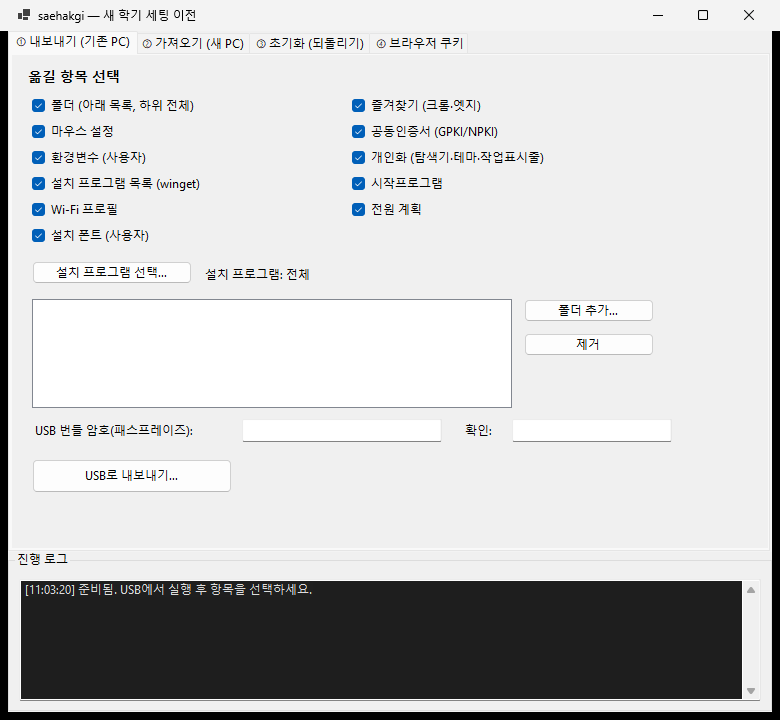
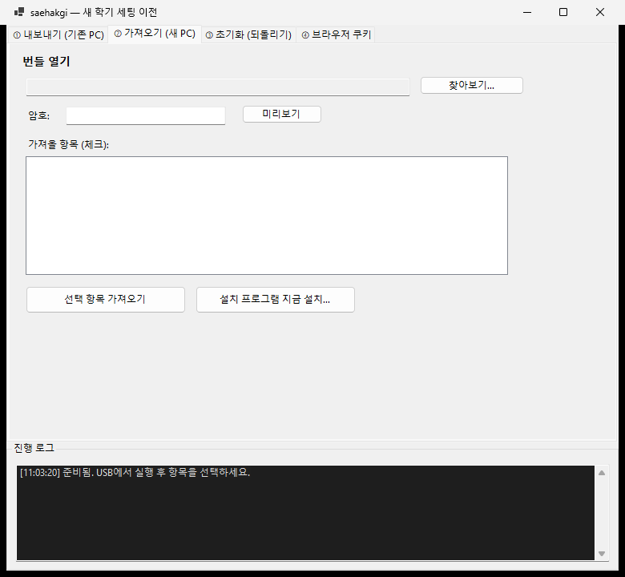
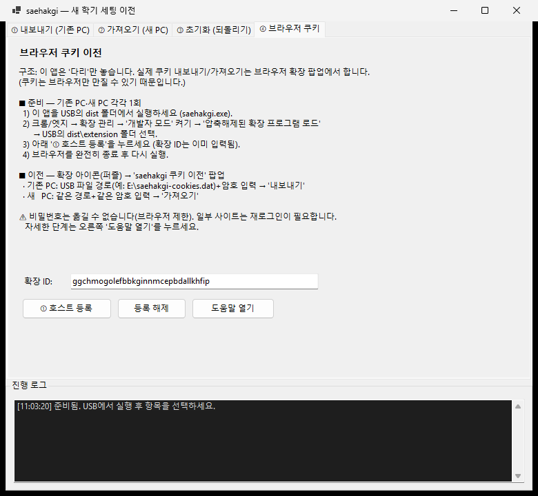
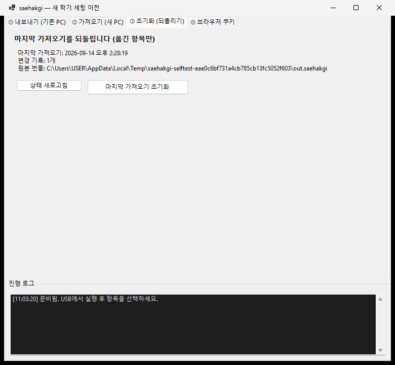

새 컴퓨터로 내 설정 옮기기
USB 하나로 쓰던 컴퓨터의 설정을 새 컴퓨터에 그대로 옮기는 방법입니다.
순서대로 하나씩만 따라 하시면 됩니다. 컴퓨터를 잘 몰라도 괜찮습니다.
- USB 메모리 1개 (넉넉히 8GB 이상을 권합니다)
- 지금 쓰던 컴퓨터, 그리고 새로 쓸 컴퓨터
- 인터넷 연결 (프로그램을 자동으로 다시 설치할 때만 필요합니다)
1부쓰던 컴퓨터에서 내보내기
1USB를 꽂습니다
지금 쓰던 컴퓨터에 USB 메모리를 꽂아 주세요. 잠시 기다리면 컴퓨터가 USB를 인식합니다.
2프로그램을 두 번 클릭해서 엽니다
USB를 열어 saehakgi 라고 적힌 파일을 두 번 클릭합니다.
USB 안의 파일 목록 예시입니다. 파란색 saehakgi 를 두 번 클릭하세요.
3“예”를 누릅니다
파란 창이 뜨면서 “이 앱이 디바이스를 변경하도록 허용하시겠어요?” 라고 물어봅니다. [예] 를 눌러 주세요.
4파란 경고가 뜨면 “추가 정보 → 실행”
컴퓨터에 따라 “Windows의 PC 보호” 라는 파란 화면이 먼저 뜰 수 있습니다. 당황하지 마시고 [추가 정보] 를 누른 다음, 아래에 나타나는 [실행] 을 누르세요.
먼저 추가 정보(4번)를 누르면, 그 아래에 실행(5번) 버튼이 나타납니다.
5옮길 것을 고릅니다
프로그램이 열리면 맨 왼쪽 “① 내보내기” 화면이 보입니다. 옮기고 싶은 항목에 체크(✔) 가 되어 있는지 확인하세요. 처음에는 전부 체크되어 있습니다.
필요 없는 것이 있으면 체크를 눌러 끄면 됩니다.

빨간 네모 안이 “무엇을 옮길지” 고르는 곳입니다.
| 항목 | 쉽게 말하면 |
|---|---|
| 폴더 | 내가 직접 고른 폴더와 그 안의 모든 파일 |
| 즐겨찾기 | 인터넷 창에 저장해 둔 사이트 목록 |
| 마우스 설정 / 개인화 | 마우스 속도, 화면 밝고 어두운 테마 같은 개인 취향 |
| 공동인증서 | 업무용 인증서 (예전의 공인인증서) |
| 설치 프로그램 목록 | 지금 깔려 있는 프로그램들의 목록 |
| 시작프로그램 | 컴퓨터를 켜면 자동으로 실행되는 프로그램 |
| Wi-Fi / 전원 / 폰트 / 환경변수 | 무선 인터넷 기억, 절전 설정, 글꼴 등 |
6옮길 폴더를 추가합니다
오른쪽 [폴더 추가…] 버튼을 누르면 폴더를 고르는 창이 열립니다. 옮기고 싶은 폴더(예: 문서, 바탕 화면, 수업자료)를 골라 주세요.
여러 개를 옮기고 싶으면 [폴더 추가…] 를 여러 번 누르면 됩니다. 고른 폴더는 왼쪽 네모 칸에 하나씩 쌓입니다.
6번 폴더 추가… 를 누르면, 7번 칸에 고른 폴더가 표시됩니다.
폴더가 크면(사진·영상이 많으면) USB 저장에 시간이 오래 걸릴 수 있습니다.
7(원하면) 옮길 프로그램을 골라 둡니다
[설치 프로그램 선택…] 을 누르면, 지금 컴퓨터에 깔려 있는 프로그램 중 새 컴퓨터에서 자동으로 다시 깔 수 있는 것들의 목록이 나옵니다. 원하는 것만 체크하세요.
그냥 넘어가도 됩니다. 아무것도 고르지 않으면 전체가 담깁니다.
8번 설치 프로그램 선택… 버튼입니다. 목록 창에서 검색도 할 수 있습니다.
8암호를 정합니다 (아주 중요)
아래 두 칸에 같은 암호를 입력합니다. 이 암호는 USB에 저장될 내 정보를 잠그는 열쇠입니다.
9번 칸에 암호를, 10번 칸에 똑같은 암호를 한 번 더 입력합니다.
9“USB로 내보내기”를 누릅니다
맨 아래 [USB로 내보내기…] 버튼을 누르면 저장할 위치를 고르는 창이 열립니다. 왼쪽 목록에서 USB 드라이브를 고른 뒤 [저장] 을 누르세요.
11번 USB로 내보내기… 버튼입니다.
10다 될 때까지 기다립니다
화면 아래 검은 칸(진행 로그) 에 진행 상황이 한 줄씩 올라옵니다. 마지막에 “✅ 내보내기 완료” 가 보이면 끝입니다.
12번 칸에서 진행 상황을 볼 수 있습니다.
2부새 컴퓨터에서 가져오기
11새 컴퓨터에 USB를 꽂고 똑같이 엽니다
앞의 1~4단계와 똑같습니다. USB를 꽂고 saehakgi 를 두 번 클릭한 뒤 [예] 를 누르세요.
12“② 가져오기” 화면으로 갑니다
위쪽 탭에서 ② 가져오기 (새 PC) 를 누릅니다. 그리고 [찾아보기…] 를 눌러 USB에 저장해 둔 파일을 고르세요.

13번 찾아보기… 로 파일을 고르면, 14번 칸에 파일 위치가 적힙니다.
13암호를 넣고 “미리보기”를 누릅니다
8단계에서 정한 그 암호를 입력하고 [미리보기] 를 누르세요. 무엇이 담겨 있는지 목록으로 보여 줍니다. 이때는 아직 컴퓨터가 바뀌지 않습니다.
15번에 암호를 넣고 16번 미리보기 를 누릅니다.
14목록을 확인하고 “가져오기”를 누릅니다
가운데 칸에 옮겨질 항목들이 나옵니다. 원하지 않는 것은 체크를 끄세요. 그다음 [선택 항목 가져오기] 를 누르면 실제로 새 컴퓨터에 적용됩니다.
17번에서 확인하고, 18번 선택 항목 가져오기 를 누릅니다.
15프로그램을 자동으로 다시 깔기
프로그램 목록을 옮겼다면, [설치 프로그램 지금 설치…] 를 눌러 보세요. 인터넷에서 자동으로 내려받아 하나씩 설치해 줍니다. 시간이 꽤 걸리니 기다려 주세요.
19번 설치 프로그램 지금 설치… 버튼입니다.
16자동으로 안 깔린 것은 목록을 보고 직접 설치
설치가 끝나면 바탕 화면에 saehakgi-재설치 폴더가 생기고, 그 안의 설치-체크리스트 를 두 번 클릭하면 인터넷 창에 목록이 열립니다.
여기에는 자동으로 깔 수 없어서 직접 설치해야 하는 프로그램만 아이콘과 함께 나옵니다 (예: 한글, 업무용 프로그램). 하나 설치할 때마다 네모칸에 체크하면 표시가 남습니다.
17확인하기
바탕 화면, 즐겨찾기, 마우스 속도 등이 예전처럼 되었는지 살펴보세요. 인증서는 인증서 프로그램에서 목록이 보이면 정상입니다.
3부(원하면) 인터넷 로그인 상태 옮기기
인터넷 사이트에 로그인해 둔 상태까지 옮기고 싶을 때만 하시면 됩니다. 조금 번거로우니 필요 없으면 건너뛰셔도 괜찮습니다.
- 저장해 둔 비밀번호는 옮길 수 없습니다. 인터넷 창이 허락하지 않습니다. (인터넷 창 설정의 “비밀번호 내보내기” 기능을 대신 쓰세요.)
- 구글처럼 보안이 강한 사이트는 옮겨도 새 컴퓨터에서 다시 로그인이 필요할 수 있습니다.
18인터넷 창에 “도우미”를 설치합니다
크롬이나 엣지를 열고, 주소창에 아래를 그대로 입력한 뒤 Enter 를 누릅니다.
크롬이면 chrome://extensions · 엣지면 edge://extensions
화면에서 개발자 모드 스위치를 켜고, [압축해제된 확장 프로그램을 로드합니다] 를 누른 뒤 USB 안의 extension 폴더를 고릅니다.
20번 개발자 모드 스위치를 켜야 21번 버튼이 나타납니다.
19프로그램에서 “호스트 등록”을 누릅니다
saehakgi 프로그램으로 돌아와 ④ 브라우저 쿠키 탭을 누르고, [① 호스트 등록] 버튼을 한 번 눌러 주세요. 그 위 칸은 이미 채워져 있으니 그대로 두시면 됩니다.

22번은 그대로 두고, 23번 ① 호스트 등록 을 누릅니다. 24번 도움말 열기 로 이 설명을 다시 볼 수 있습니다.
20인터넷 창을 완전히 껐다가 다시 켭니다
열려 있는 크롬/엣지 창을 모두 닫았다가 다시 여세요. 이 과정을 건너뛰면 다음 단계에서 오류가 납니다.
21쓰던 컴퓨터에서 “내보내기”
인터넷 창 오른쪽 위 퍼즐 조각 모양 아이콘을 누르고 saehakgi 쿠키 이전 을 선택합니다. 작은 창이 열리면 두 칸을 채우고 [내보내기] 를 누르세요.
- USB 파일 경로: 예) E:\saehakgi-cookies.dat — 앞의 E 는 USB 드라이브 글자입니다.
- 암호: 아무 암호나 정하고 기억해 두세요.
25번에 저장할 위치, 26번에 암호를 넣고 27번 내보내기 를 누릅니다.
22새 컴퓨터에서 “가져오기”
새 컴퓨터에서도 18~20단계를 똑같이 한 다음, 같은 작은 창에서 똑같은 파일 위치와 똑같은 암호를 넣고 이번에는 [가져오기] 를 누릅니다.
끝나면 자주 가는 사이트를 열어 로그인이 되어 있는지 확인해 보세요.
4부되돌리고 싶을 때
★원래대로 되돌리기
③ 초기화 (되돌리기) 탭에서 [마지막 가져오기 초기화] 를 누르면, 이 프로그램이 옮긴 것만 원래대로 되돌립니다.

28번으로 상태를 확인하고, 29번 마지막 가져오기 초기화 를 누릅니다.
막힐 때 보는 곳
| 이런 일이 생기면 | 이렇게 하세요 |
|---|---|
| 파란 경고창이 떠서 실행이 안 돼요 | [추가 정보] → [실행] 을 누르세요 (4단계). |
| “예”를 누르는 창이 안 보여요 | 화면 아래 작업 표시줄에서 깜빡이는 방패 아이콘을 눌러 보세요. |
| 암호가 틀렸다고 나와요 | 내보낼 때 정한 암호와 대소문자까지 똑같아야 합니다. |
| USB 글자(E:)가 달라요 | 내 PC를 열어 USB의 실제 글자를 확인하고 그 글자로 바꿔 주세요. |
| 쿠키 가져오기에서 “호스트” 오류가 나요 | 인터넷 창을 완전히 껐다 켜세요 (20단계). |
| 프로그램 자동 설치가 안 돼요 | 인터넷 연결을 확인하세요. 그래도 안 되면 체크리스트를 보고 직접 설치하면 됩니다. |
| 저장된 비밀번호가 안 옮겨졌어요 | 인터넷 창이 허락하지 않는 기능입니다. 인터넷 창 설정의 “비밀번호 내보내기”를 이용하세요. |